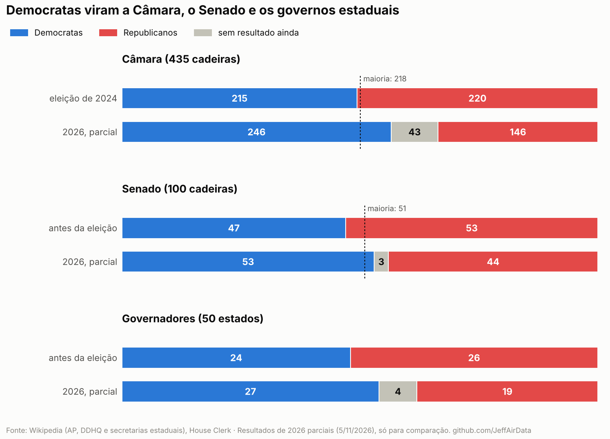
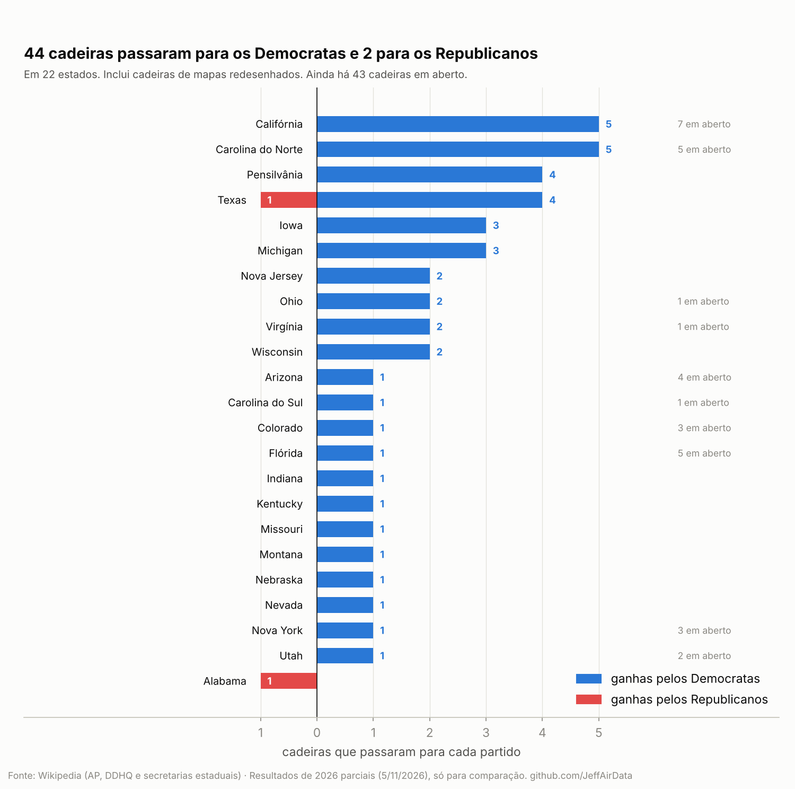
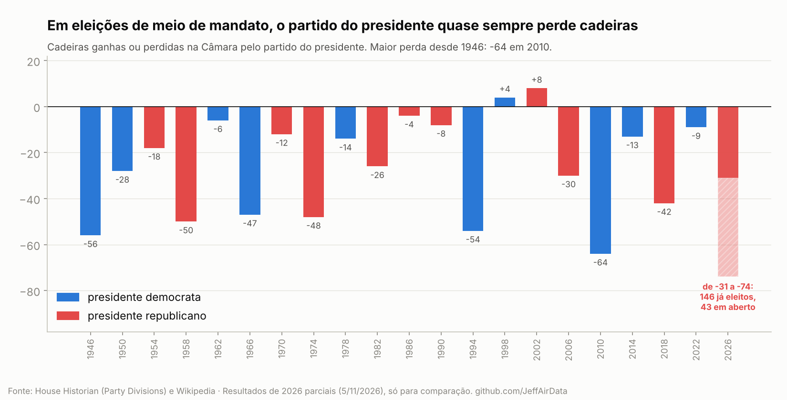
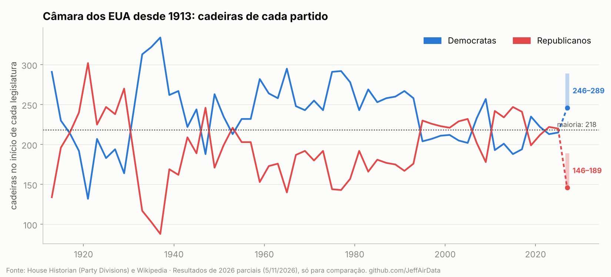
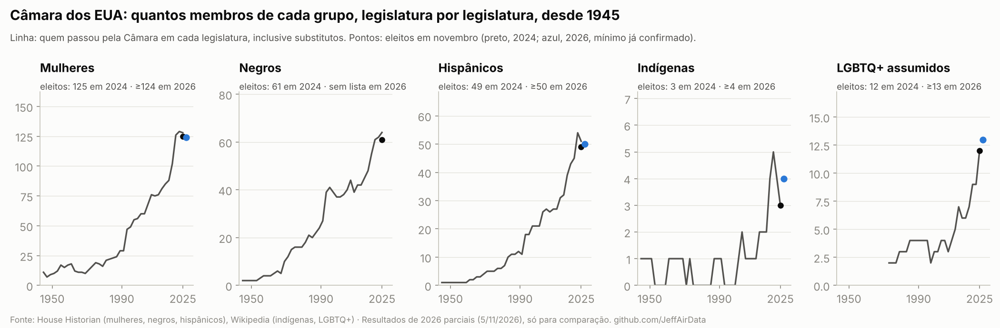
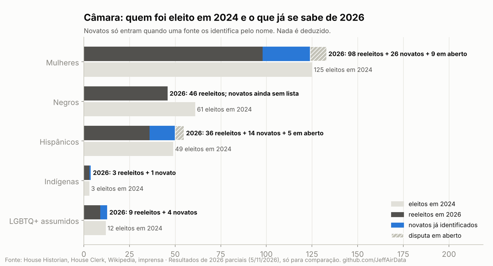
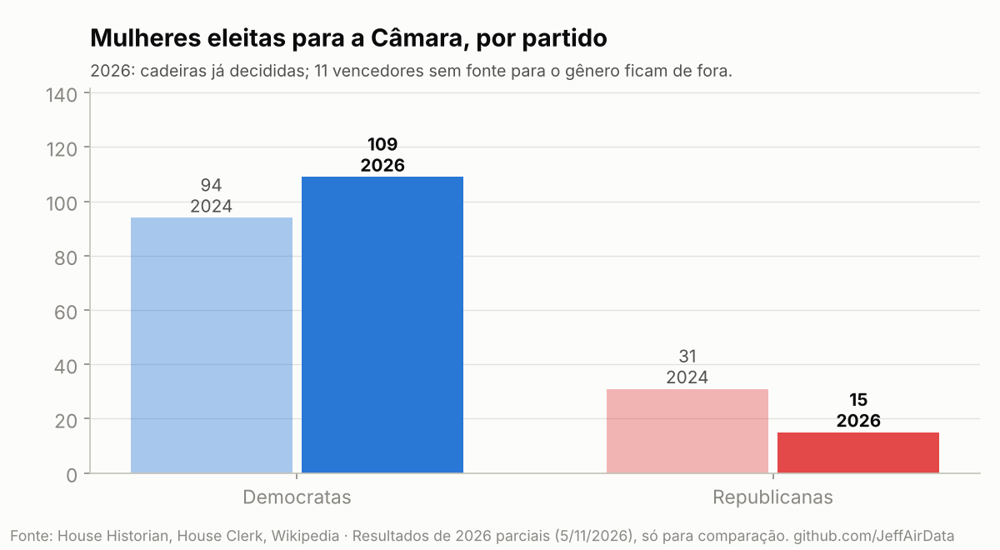

Eleições nos EUA: Congresso e governadores, 2024 x 2026
Resultados parciais. Retrato de 5 de novembro de 2026, dois dias depois da eleição: 43 cadeiras da Câmara, 3 do Senado e 4 governos ainda sem vencedor. Os números servem para comparar, não são definitivos.
Os Democratas passaram de 215 para pelo menos 246 cadeiras na Câmara, de 47 para 53 no Senado e de 24 para 27 governos estaduais. Comparei com a eleição de 2024 e com a série histórica desde 1913.
1. Câmara, Senado e governadores
- Câmara: 215 D x 220 R em 2024; agora 246 D x 146 R, com 43 em aberto. A maioria é 218: os Democratas já a têm.
- Senado: 47 D x 53 R antes da eleição (os dois independentes votam com os Democratas); agora 53 D x 44 R. Passaram para os Democratas: Iowa, Kansas, Maine, Carolina do Norte, Ohio (eleição especial), Carolina do Sul e Texas. Em aberto: Alasca, Michigan e Mississippi.
- Governadores: 24 D x 26 R antes; agora 27 D x 19 R. Viraram para os Democratas: Geórgia, Iowa, Nevada, Ohio e Texas. Em aberto: Alasca, Califórnia, Kansas e Oklahoma.

2. Estado por estado
44 cadeiras passaram para os Democratas e 2 para os Republicanos. Vários estados redesenharam os distritos entre 2025 e 2026, por isso a comparação é pela bancada de cada estado e pelo partido que ganhou cada cadeira.

| Distrito | 2024 | 2026 |
|---|
3. A série histórica
De 1946 a 2022, o partido do presidente perdeu cadeiras na Câmara em 18 de 20 eleições de meio de mandato. A maior perda foi a de 2010: 64 cadeiras. Em 2026, os Republicanos perdem entre 31 e 74, dependendo das 43 cadeiras em aberto. Se a perda passar de 64, será a maior desde 1946.


4. Mulheres, negros, hispânicos, indígenas e LGBTQ+
- Mulheres: 125 eleitas para a Câmara em 2024 e pelo menos 124 em 2026, com 43 cadeiras em aberto. A mudança está nos partidos: as democratas passaram de 94 para 109; as republicanas, de 31 para 15. As 26 novatas já confirmadas são todas democratas.
- Hispânicos: 49 em 2024 e pelo menos 50 em 2026, com 14 novatos.
- Indígenas: 3 na Câmara em 2024 e 4 em 2026, com Claire Valdez (Nova York). No Senado, Peggy Flanagan (Minnesota) será a primeira mulher indígena eleita senadora.
- LGBTQ+: 12 na Câmara no início de 2025 e pelo menos 13 em 2026. No Senado, Chris Pappas (New Hampshire) é o primeiro homem abertamente gay eleito senador e se junta a Tammy Baldwin.
- Negros: 61 eleitos em 2024; 46 foram reeleitos. Ainda não há lista dos novatos. A imprensa destaca Melat Kiros, primeira congressista negra do Colorado, e Juliana Stratton, eleita senadora por Illinois.



Como ler os números
- Azul é sempre Democrata e vermelho, sempre Republicano. Outros partidos e disputas sem resultado ficam em cinza.
- Uma disputa só conta como decidida quando a fonte marca o vencedor. Nenhum resultado é estimado.
- 2024 bate com o resultado oficial da Câmara: 220 Republicanos e 215 Democratas.
- A série histórica da Câmara é a tabela oficial Party Divisions do Historiador da Câmara.
- Mulheres, negros e hispânicos por legislatura vêm das listas oficiais do Historiador da Câmara; indígenas e LGBTQ+, das listas da Wikipedia. A linha conta quem passou pela Câmara em cada legislatura, inclusive substitutos; os pontos contam só os eleitos em novembro.
- Mulheres eleitas em 2026: para quem já está na Câmara, o tratamento oficial do Clerk (Mr./Ms.); para as novatas, os pronomes do artigo da Wikipedia de cada uma. Quem não tem fonte fica de fora; nada é deduzido pelo primeiro nome.
- Novatos dos outros grupos só entram quando uma fonte os nomeia. Por isso 2026 é um mínimo, não um total.
- Novato quer dizer quem não está na Câmara atual; alguns, como Elaine Luria, já foram deputados antes.